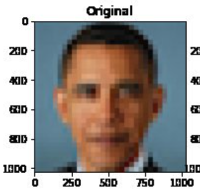
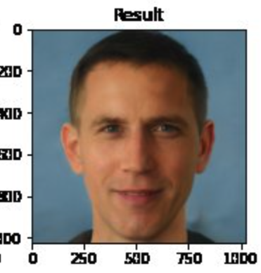

Fairness
Last updated on 2024-11-14 | Edit this page
Estimated time: 30 minutes
Overview
Questions
- What do we mean by fairness and bias?
- What are some examples of biased models?
Objectives
- Consider sources of bias in data.
- Recognise examples of bias in language models.
- Recognise examples of bias in image models.
Bias and fairness
We live in a world full of bias. Opportunities such as education and healthcare are not evenly distributed: access is largely a matter of luck and a reflection of our circumstances of birth. Given the uneven, biased world we live in, it is hardly surprising that the machine learning models that we build are highly susceptible to exhibiting favoritism and prejudice.
Bias is a systematic preference or prejudice against a particular group, individual, or feature. A well-cited definition of fairness is “the absence of any prejudice or favoritism towards an individual or a group based on their inherent or acquired characteristics”.
Machine learning models are increasingly used in ways that directly affect people’s lives, so it is crucially important that we strive for fairness to prevent harmful discrimination.
Strategies to achieve fairness often focus on attempting to eliminate bias in training data (for example, by collecting more representative datasets) or by making algorithmic adjustments (for example, by weighting underrepresented classes more heavily). This remains an active research area, wth no simple solutions.
Photo upsampling
Biases are often most obvious in imaging models. In their paper on “PULSE: Self-Supervised Photo Upsampling via Latent Space Exploration of Generative Models”, Menon and colleagues describe the application of a machine learning algorithm for upsampling images.
The paper demonstrates how a blurry, low resolution image can be transformed into a “sharp, realistic, high-resolution image”. Soon after publication, apparent biases were shared widely on social media.
Question
- Who is shown in this blurred picture? 
- While the picture is of Barack Obama, the upsampled image shows a white face. 
Menon and colleagues subsequently updated their paper to discuss this issue of bias. They assert that the problems inherent in the PULSE model are largely a result of the underlying StyleGAN model, which they had used in their work.
Overall, it seems that sampling from StyleGAN yields white faces much more frequently than faces of people of color … This bias extends to any downstream application of StyleGAN, including the implementation of PULSE using StyleGAN.
…
Results indicate a racial bias among the generated pictures, with close to three-fourths (72.6%) of the pictures representing White people. Asian (13.8%) and Black (10.1%) are considerably less frequent, while Indians represent only a minor fraction of the pictures (3.4%).
You can try the model here.
Language models
Natural Language Processing (NLP) is an area of machine learning focused on the analysis of text. NLP has numerous practical applications, including voice recognition, foreign-language translation, and even AI pair programming.
In recent years, some of the major advances in NLP have been in the evolution of models that allow tokens (words, characters) in text sequences to be predicted from their context. Two such models include Bidirectional Encoder Representations from Transformers (BERT) and Generative Pre-trained Transformer (GPT).
These language models are built upon “word embeddings”, which are representations of words in a multi-dimensional space. The models implement a concept popularized by linguist John Firth that “a word is characterized by the company it keeps”.
When the models are trained on biased data - which they inevitably are - the models become amplifiers of often harmful sterotypes. This issue, and a proposed approach to their mitigation, are discussed by Bolukbasi et al in Man is to Computer Programmer as Woman is to Homemaker? Debiasing Word Embeddings.
The blind application of machine learning runs the risk of amplifying biases present in data. Such a danger is facing us with word embedding, a popular framework to represent text data as vectors which has been used in many machine learning and natural language processing tasks. We show that even word embeddings trained on Google News articles exhibit female/male gender stereotypes to a disturbing extent.
…
given an analogy puzzle, “man is to king as woman is to x” (denoted as man:king :: woman:x), simple arithmetic of the embedding vectors finds that x=queen is the best answer because:
\[ \overrightarrow{man} - \overrightarrow{woman} \approx \overrightarrow{king} − \overrightarrow{queen} \]
…
… the same system that solved the above reasonable analogies will offensively answer “man is to computer programmer as woman is to x” with x=homemaker. Similarly, it outputs that a father is to a doctor as a mother is to a nurse.
Stochastic parrots
In their high-profile paper On the Dangers of Stochastic Parrots: Can Language Models Be Too Big?, Bender and colleagues ask: “What are the possible risks associated with [language model] technology and what paths are available for mitigating those risks?”.
The last couple of paragraphs of the conclusion are copied below:
Work on synthetic human behavior is a bright line in ethical AI development, where downstream effects need to be understood and modeled in order to block foreseeable harm to society and different social groups. Thus what is also needed is scholarship on the benefits, harms, and risks of mimicking humans and thoughtful design of target tasks grounded in use cases sufficiently concrete to allow collaborative design with affected communities.
Question
- Why is the word “parrot” used to describe the language models?
- On a surface level modern language models can give the appearance of possessing human-like intelligence, for example, by holding conversations or by creating poems. In reality, the models are simply mimicking the language and biases of humans.
Key Points
- Biases in data lead to biased models.
- All current models are likely to exhibit some form of bias.
- Achieving fairness is an increasingly active area of research.